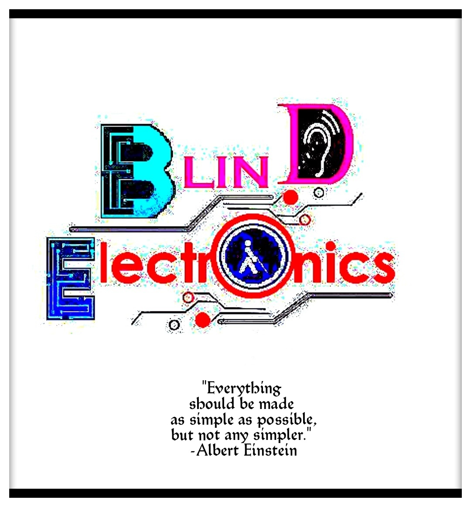

____________________________________________________________________________________________________________________________________________________
ASSISTIVE TECHNOLOGY
COURSE
____________________________________________________________________________________________________________________________________________________
Project - Blind Electronics
Guide
Dr. Anil Prabhakar
Dr. Subir Bhaduri
Dr. Amith Nair
Mentor
Dr. Namita Jacob
Dr. Akila Surendran
Presented By
Mr. Sanchit Ghule
Indian Institute of Technology Madras
IITM
publisher